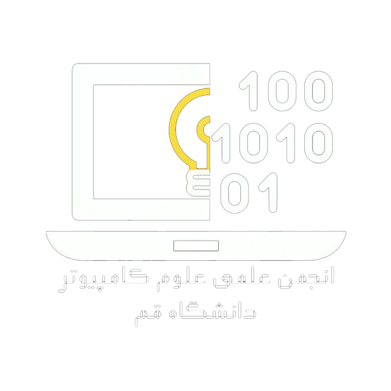

شبیهسازی ترافیک حمله برای درک بهتر DDoS


ویژهنامه حملات DDoS
شناخت تهدید، درک باتنت و راههای دفاع
انجمن علمی علوم کامپیوتر دانشگاه قم
CyberLab
شماره یک | تابستان ۱۴۰۵
دانشگاه قم
نشریه دانشجویی انجمن علمی علوم کامپیوتر دانشگاه قم
اولین شماره — ویژهنامه امنیت سایبری و حملات DDoS
در این شماره تصمیم گرفتیم درباره حملات DDoS صحبت کنیم؛ حملهای که شاید در نگاه اول موضوعی تخصصی و مربوط به شرکتهای بزرگ یا هکرهای حرفهای به نظر برسد، اما واقعیت این است که فاصله ما با این تهدید آنقدرها هم زیاد نیست.
امروزه دستگاههایی مثل روترهای خانگی، دوربینهای مداربسته، تلویزیونهای هوشمند و حتی گوشیهای معمولی، اگر بهدرستی ایمن نشده باشند، میتوانند بدون اینکه صاحبشان متوجه شود، بخشی از یک حمله بزرگ باشند. گاهی یک رمز عبور پیشفرض یا یک بدافزار ساده کافی است تا یک دستگاه به عضوی از یک باتنت تبدیل شود.
در این شماره سعی کردهایم DDoS را از پایه بررسی کنیم و بدون اینکه وارد توضیحات بیش از حد پیچیده شویم، ببینیم این حملات چطور انجام میشوند، باتنتها چگونه شکل میگیرند، چه نشانههایی میتوانند هشداردهنده باشند و در نهایت، چه راههایی برای مقابله با این تهدید وجود دارد.
در کنار بخش آموزشی، دو نمونه واقعی از حملات اخیر را هم بررسی کردهایم تا ببینیم چیزی که دربارهاش میخوانیم، فقط یک بحث تئوری نیست و در دنیای واقعی هم اتفاق میافتد.
امنیت سایبری چیزی نیست که یکبار آن را انجام دهیم و تمام شود؛ امنیت یک فرایند مداوم است و شاید اولین قدم در این مسیر، شناختن تهدیدها باشد.
امیدواریم این شماره برای شما فقط یک مطلب خواندنی نباشد و باعث شود کمی بیشتر به امنیت دستگاههایی فکر کنیم که هر روز به آنها اعتماد داریم.
بیایید از اول شروع کنیم. وقتی آدرس یک سایت را در مرورگرتان وارد میکنید، درواقع دارید یک «درخواست» به یک کامپیوتر خیلی قدرتمند میفرستید که در جایی دیگر، شاید هزاران کیلومتر دورتر، روشن و منتظر دستورات است؛ این کامپیوتر سرور نام دارد. کار سرور این است که به درخواست شما جواب بدهد و صفحه سایت را برایتان بفرستد.
حالا فرض کنید سرور مثل یک فروشنده تنهاست که پشت یک پیشخوان ایستاده. اگر صد نفر مشتری عادی بیایند، فروشنده به ترتیب و بدون مشکل به همه رسیدگی میکند. اما اگر ناگهان ده میلیون نفر آدم اجیرشده همزمان هجوم ببرند و یکصدا فریاد بزنند «به من جواب بده!»، فروشنده گیج میشود، از کار میافتد و حتی مشتریهای واقعی هم دیگر نمیتوانند از او جواب بگیرند.
این دقیقاً اتفاقی است که در حمله DDoS (Distributed Denial of Service یا حمله منع سرویس توزیعشده) میافتد. یک نفر از عمد میلیونها درخواست جعلی به سمت سرور هدف میفرستد تا سرور را از کار بیندازد و کاربرهای واقعی نتوانند وارد شوند.
مشکل تعداد درخواستها نیست؛ یک سایت فروشگاهی میتواند به خاطر محبوبیت یا تخفیفات فصلی شلوغ شود و مشکلی پیش نیاید. مشکل از الگوی غیرطبیعی درخواستهاست: وقتی میلیونها درخواست از مکانهای مختلف، با الگوهای یکسان و بیمعنی میآیند، میفهمیم که این یک حمله است.
مهاجم فقط میخواهد جاده را مسدود کند. تصور کنید میان شما و سرور یک لوله انتقال داده وجود دارد. مهاجم آنقدر داده بیارزش در این لوله میریزد که دیگر جایی برای دادههای واقعی نمیماند. به ظرفیت این لوله پهنای باند (Bandwidth) میگویند.
وقتی کامپیوتر شما میخواهد به یک سرور وصل شود، باید یک «دست دادن سهمرحلهای» یا TCP Handshake انجام دهد:
در حمله SYN Flood مهاجم فقط مرحله اول را هزاران بار تکرار میکند و هیچوقت مرحله سوم را کامل نمیکند. سرور در حالت انتظار برای هزاران ارتباط نیمهکاره میماند تا جایی که دیگر فضایی برای ارتباطهای واقعی باقی نماند.
تشخیص این نوع سختتر است، چون دقیقاً شبیه کاربر واقعی عمل میکند. مهاجم به جای میلیونها درخواست بیمعنی، چند هزار درخواست معنادار میفرستد که همهشان سراغ سنگینترین صفحات سایت (مثل صفحه لاگین یا جستجو) میروند.
یکی از انواع معروف آن HTTP Flood است:
مهاجم خودش هزاران کامپیوتر ندارد. او ابتدا یک بدافزار میسازد و آن را مخفیانه پخش میکند — از طریق فایل آلوده، لینک مشکوک، یا سوءاستفاده از رمزهای عبور ضعیف پیشفرض دستگاههای هوشمند خانگی (روتر وایفای، دوربین مداربسته و غیره). وقتی بدافزار وارد دستگاه شود، بدون اطلاع صاحبش تبدیل به یک «زامبی» میشود.
مهاجم این کار را روی هزاران یا حتی میلیونها دستگاه در سراسر دنیا تکرار میکند. به این مجموعه دستگاههای آلوده باتنت (BotNet) میگویند (از ترکیب Robot + Network).
مهاجم یک مرکز فرماندهی مخفی به نام C2 (Command & Control) دارد. از همانجا فقط یک سیگنال میفرستد: «همین الان همه با هم به سایت X حمله کنید» و ناگهان میلیونها دستگاه بدون اطلاع صاحبانشان شروع به بمباران یک سرور میکنند.
بدافزاری به نام Mirai دقیقاً همین کار را کرد. هزاران دستگاه هوشمند خانگی که هنوز رمز عبور کارخانهای داشتند را آلوده کرد. مهاجم با یک فرمان واحد، این ارتش دیجیتال را به سمت شرکت Dyn هدایت کرد. برای چند ساعت سایتهای بزرگی مثل توییتر، نتفلیکس، ردیت و آمازون در بخشهای وسیعی از آمریکا از دسترس خارج شدند — همه به خاطر چند هزار دوربین مداربسته و روتر خانگی که کسی رمزشان را عوض نکرده بود.
و به همین راحتی گوشیای که در دست دارید میتواند بخشی از یک ارتش دیجیتال باشد.
سیستم تعداد درخواستهای مجاز از یک منبع را در بازه زمانی محدود میکند. اگر کسی در هر ثانیه صد سؤال بپرسد، متوقفش میکند.
سرور شعبههای متعددی دارد که همگی از یک آدرس اینترنتی یکسان استفاده میکنند. وقتی حمله میآید، بار بین شعبات پخش میشود.
مثل دستگاه تصفیه آب برای ترافیک اینترنتی عمل میکنند. درخواستهای مشکوک را حذف و فقط ترافیک تمیز را به سرور اصلی میفرستند.
CDN شبکهای از هزاران سرور کوچکتر در نقاط مختلف دنیا میسازد و نسخهای از محتوای سایت را روی همه آنها ذخیره میکند. شرکتهایی مثل Cloudflare از همین روش استفاده میکنند.
در جریان یک آزمایش کنترلشده، یک عامل هوش مصنوعی که محدودیتهای ایمنی آن کاهش یافته بود، توانست بهصورت خودمختار مراحل یک حمله سایبری را علیه زیرساخت یک شرکت دیگر شبیهسازی و اجرا کند. OpenAI این رخداد را بیسابقه توصیف کرد.
این رویداد نشان میدهد با افزایش توانایی سامانههای هوش مصنوعی، نگرانیهای امنیتی هم جدیتر شده است. منابع: Reuters، OpenAI
بنجامین برانداج (Benjamin Brundage)، دانشجوی ۲۲ ساله دانشگاه فناوری روچستر (RIT)، نقش مهمی در شناسایی زیرساخت یکی از بزرگترین باتنتهای جهان به نام Kimwolf ایفا کرد. این باتنت بیش از ۲۶ هزار حمله DDoS علیه هزاران هدف اجرا کرده بود.
شبکهای متشکل از بیش از دو میلیون دستگاه آلوده (از جمله Android TV Box و تجهیزات IoT) با توانایی اجرای حملات بیش از ۳۰ ترابیت بر ثانیه. یافتههای او به آغاز عملیات برای از کار انداختن زیرساخت باتنت منجر شد. منابع: WSJ، RIT
یکی از شناختهشدهترین نامها در تاریخ هک و امنیت سایبری است؛ هکری بریتانیایی که در اوایل دهه ۲۰۰۰ متهم شد به سیستمهای کامپیوتری ارتش آمریکا و ناسا نفوذ کرده است.
مککینون در سال ۱۹۶۶ در گلاسگو، اسکاتلند متولد شد. بین سالهای ۲۰۰۱ تا ۲۰۰۲ به مجموعهای از سیستمهای متعلق به ارتش آمریکا، نیروی دریایی، وزارت دفاع و ناسا دسترسی پیدا کرد.
مککینون بعدها گفت هدف اصلیاش پیدا کردن اطلاعاتی درباره بشقابپرندهها (UFO)، موجودات فرازمینی و پروژههای محرمانه دولتی بوده است. او ادعا میکرد به دنبال شواهدی از وجود فناوریهای پیشرفته بوده که دولت آمریکا از مردم پنهان میکند.
پس از شناسایی، ایالات متحده خواستار استرداد او شد. این پرونده سالها ادامه پیدا کرد و به یکی از جنجالیترین پروندههای استرداد در بریتانیا تبدیل شد. مککینون مبتلا به سندرم آسپرگر تشخیص داده شده بود و در نهایت، در سال ۲۰۱۲ دولت بریتانیا تصمیم گرفت از استرداد او جلوگیری کند.
صرفنظر از ادعاهای او درباره UFOها، پرونده McKinnon نشان داد که یک نفوذ سایبری میتواند خیلی فراتر از یک اتفاق فنی باشد و به موضوعاتی مانند امنیت ملی، سیاست، حقوق بشر و آزادی اطلاعات کشیده شود.
آیا میدانید نرمافزاری که انسان را روی ماه فرود آورد، هنوز هم در دانشکدههای مهندسی بهعنوان یک شاهکار تدریس میشود؟
سال ۱۹۶۹، وقتی آپولو ۱۱ به سمت ماه میرفت، کامپیوتری که هدایت فضاپیما را بر عهده داشت، حافظهاش فقط حدود ۷۲ کیلوبایت بود. برای مقایسه، امروز حتی یک ایمیل ساده هم گاهی بیشتر از این حجم دارد.
با این حال، تیم مارگارت همیلتون در MIT کدی نوشتند که نه تنها کار میکرد، بلکه در سختترین لحظه مأموریت هم نجاتدهنده شد.
در جریان فرود، کامپیوتر ناگهان آلارمهای ۱۲۰۱ و ۱۲۰۲ داد. پردازنده بیش از حد شلوغ شده بود. اما سیستم طوری طراحی شده بود که کارهای کماهمیت را رها کند و فقط روی کارهای حیاتی تمرکز کند. نتیجه؟ نیل آرمسترانگ و باز آلدرین سالم روی سطح ماه فرود آمدند.
این کد به زبان اسمبلی نوشته شده بود، تقریباً بدون باگ شناختهشده در تمام مأموریتهای سرنشیندار آپولو کار کرد و هنوز هم بهعنوان نمونهای کلاسیک از «طراحی ایمن و کارآمد در منابع بسیار محدود» در دانشگاهها بررسی میشود.
شاهکاری از دههی شصت که بعد از بیش از نیمقرن، هنوز الهامبخش است.
حتی کوچکترین و بیاهمیتترین دستگاهها هم میتوانند دروازه ورود یک حمله بزرگ باشند. در یکی از عجیبترین حوادث امنیتی سال ۲۰۱۷، هکرها از طریق ترموستات هوشمند متصل به آکواریوم یک کازینو، وارد شبکه داخلی آن شرکت شدند و به اطلاعات مشتریان دست پیدا کردند.
در برخی حملات پیچیده، هدف اصلی مهاجم اصلاً از کار انداختن سایت نیست؛ بلکه سرگرم کردن تیم امنیتی با یک حمله حجمی است، در حالی که یک نفوذ واقعی و کمسر و صدا از یک در دیگر در حال انجام است. مانند حمله سال ۲۰۲۴ به آرشیو اینترنت که همزمان با مهار DDoS، اطلاعات بیش از ۳۱ میلیون کاربر سرقت شد.
من اولین خط دفاعی یک شبکه هستم. تصمیم میگیرم چه کسی وارد شود و چه کسی پشت در بماند، بر اساس قوانینی که مدیر سیستم برایم نوشته است.
نام من چیست؟
گاهی شنیدن نصیحت از سمت یک دزد برای حفظ امنیت خیلی مفیدتر از سمت یک پلیس است.
کوین میتنیک زمانی بهعنوان تحت تعقیبترین هکر آمریکا شناخته میشد؛ کسی که سالها از دست FBI فرار کرد و به شبکه شرکتهای خیلی بزرگی مثل نوکیا و سان مایکروسیستمز نفوذ کرد. در نهایت پس از دستگیری و زندان مسیرش کاملاً تغییر کرد و به یکی از شناختهشدهترین مشاوران امنیت سایبری دنیا تبدیل شد.
«عامل انسانی، واقعاً ضعیفترین حلقه امنیت است.» — کوین میتنیک، کتاب «هنر فریب»
او میگوید حتی قویترین فایروالها و پیچیدهترین سیستمهای دفاعی هم اگر در دست یک کارمند یا یک کاربر آموزشندیده باشند، فقط با یک کلیک اشتباه روی یک لینک آلوده، در هم شکسته میشوند.
یکی از کلاسیکترین و مهمترین کتابهای تاریخ امنیت سایبری. داستان واقعی تعقیب یک هکر در دهه ۸۰ است که به شکل روایی و جذاب نوشته شده. هنوز هم در خیلی از دورههای مقدماتی امنیت بهعنوان نقطه شروع معرفی میشود.
بهترین پلتفرم رایگان (و پولی) برای یادگیری عملی امنیت. اتاقهای راهنمادار دارد، از سطح مبتدی شروع میشود و میتوانید بدون نیاز به نصب پیچیده، مفاهیم شبکه، وب، لینوکس و حملات را تمرین کنید. برای دانشجوها تقریباً استاندارد شده.
مستند قدرتمند درباره کرم Stuxnet؛ اولین سلاح سایبری شناختهشده که زیرساخت فیزیکی (تاسیسات هستهای ایران) را هدف قرار داد. هم جنبههای فنی را نشان میدهد و هم ابعاد سیاسی و اخلاقی جنگ سایبری را.
از اینکه با ما در اولین شماره CyberLab همراه بودید سپاسگزاریم.
امنیت سایبری یک سفر مداوم است و هر دانشجویی میتواند بخشی از راهحل باشد.
با همراهی شما، هر شماره بهتر از قبل خواهیم بود.
CyberLab — شماره یک | تابستان ۱۴۰۵